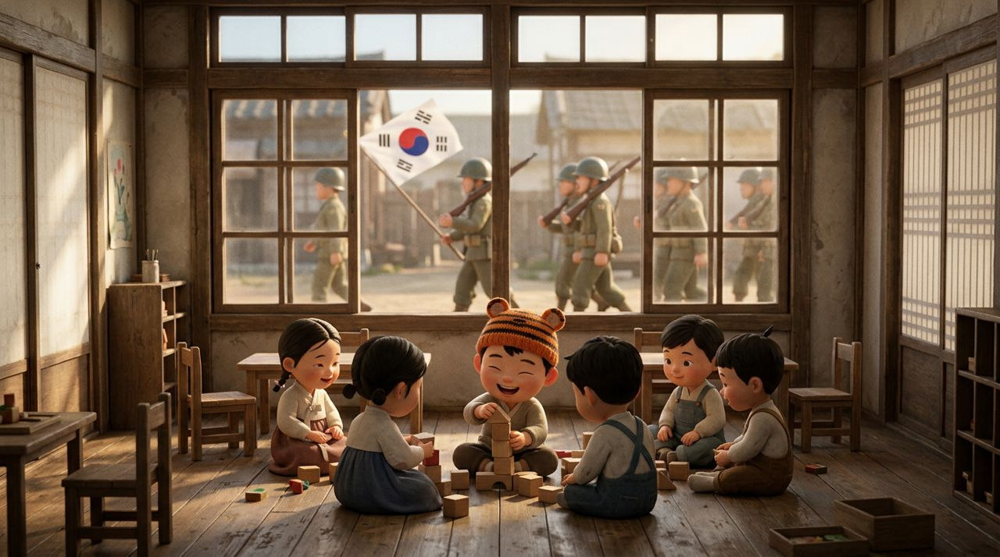
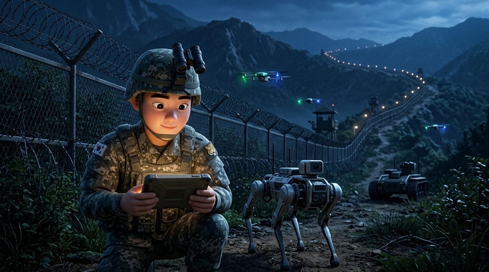

<title>창밖의 군대 스토리보드</title>
<meta name="claude:viewport-fit-sides" content="cover">
<link rel="preconnect" href="https://fonts.googleapis.com">
<link rel="preconnect" href="https://fonts.gstatic.com" crossorigin>
<link rel="stylesheet" href="https://fonts.googleapis.com/css2?family=Black+Han+Sans&family=IBM+Plex+Sans+KR:wght@400;500;600;700&family=IBM+Plex+Mono:wght@400;500&display=swap">
<style>
/* Layout: sticky header + tab bar; each tab is a single centred column (max 1080px) with wide exhibits (time bar, charts, tables) scrolling inside their own box. */
:root {
  --bg: #F1F3EE;
  --surface: #FFFFFF;
  --surface-2: #E6EAE2;
  --fg: #1A1E1B;
  --muted: #586056;
  --line: #D2D8CC;
  --accent: #C8611E;      /* 호국이 털모자 주황 */
  --accent-ink: #9A4710;
  --accent-soft: #F7E4D2;
  --olive: #4E5C31;       /* 국방색 */
  --olive-soft: #E3E8D6;
  --sky: #2E5E8E;         /* 하늘 전환 */
  --sky-soft: #DDE8F3;
  --check: #A86A12;
  --check-soft: #F6EBD2;
  --shadow: 0 1px 2px rgba(26,30,27,.06), 0 6px 20px rgba(26,30,27,.06);
  --font-display: "Black Han Sans", "IBM Plex Sans KR", "Apple SD Gothic Neo", "Malgun Gothic", sans-serif;
  --font-body: "IBM Plex Sans KR", "Apple SD Gothic Neo", "Malgun Gothic", "Noto Sans KR", system-ui, sans-serif;
  --font-mono: "IBM Plex Mono", ui-monospace, "SFMono-Regular", Menlo, monospace;
}
@media (prefers-color-scheme: dark) {
  :root:not([data-theme="light"]) {
    --bg: #111412; --surface: #191D1A; --surface-2: #232823; --fg: #E7EAE3; --muted: #9DA597; --line: #2F3530;
    --accent: #EE8A42; --accent-ink: #F3A469; --accent-soft: #3B2718;
    --olive: #A5B873; --olive-soft: #262D1C; --sky: #86B5E0; --sky-soft: #18283A;
    --check: #E2B55E; --check-soft: #33291A;
    --shadow: 0 1px 2px rgba(0,0,0,.4), 0 6px 20px rgba(0,0,0,.25);
    color-scheme: dark;
  }
}
:root[data-theme="dark"] {
  --bg: #111412; --surface: #191D1A; --surface-2: #232823; --fg: #E7EAE3; --muted: #9DA597; --line: #2F3530;
  --accent: #EE8A42; --accent-ink: #F3A469; --accent-soft: #3B2718;
  --olive: #A5B873; --olive-soft: #262D1C; --sky: #86B5E0; --sky-soft: #18283A;
  --check: #E2B55E; --check-soft: #33291A;
  --shadow: 0 1px 2px rgba(0,0,0,.4), 0 6px 20px rgba(0,0,0,.25);
  color-scheme: dark;
}

* { box-sizing: border-box; }
body {
  background: var(--bg); color: var(--fg);
  font-family: var(--font-body); font-size: 15px; line-height: 1.65;
  -webkit-font-smoothing: antialiased;
}
body::before { content: ""; position: fixed; inset: 0 0 auto; height: env(safe-area-inset-top, 0px); z-index: 10; background: var(--surface); }
a { color: var(--accent-ink); }
h1, h2, h3 { text-wrap: balance; margin: 0; }
p { margin: 0; }
.wrap { max-width: 1080px; margin: 0 auto; padding-left: max(16px, env(safe-area-inset-left, 0px)); padding-right: max(16px, env(safe-area-inset-right, 0px)); }

/* header */
.top { position: sticky; top: env(safe-area-inset-top, 0px); z-index: 5; background: var(--surface); border-bottom: 1px solid var(--line); }
.top-row { display: flex; align-items: baseline; gap: 12px; flex-wrap: wrap; padding-block: 14px 6px; }
.brand { font-family: var(--font-display); font-size: 22px; letter-spacing: .01em; }
.brand-sub { color: var(--muted); font-size: 13px; }
.brand-ver { margin-left: auto; font-family: var(--font-mono); font-size: 12px; color: var(--muted); }
.tabs { display: flex; gap: 4px; overflow-x: auto; scrollbar-width: none; }
.tabs::-webkit-scrollbar { display: none; }
.tab {
  appearance: none; border: 0; background: none; color: var(--muted); font: inherit; font-weight: 600; font-size: 14px;
  padding: 10px 12px 12px; border-bottom: 3px solid transparent; cursor: pointer; white-space: nowrap;
}
.tab:hover { color: var(--fg); }
.tab[aria-selected="true"] { color: var(--fg); border-bottom-color: var(--accent); }
.tab:focus-visible, button:focus-visible, .seg:focus-visible, .chip:focus-visible { outline: 2px solid var(--accent); outline-offset: 2px; }

main { padding-block: 28px 64px; }
.panel { display: grid; gap: 40px; }
.section { display: grid; gap: 16px; min-width: 0; }
.eyebrow { font-size: 12px; font-weight: 600; letter-spacing: .08em; color: var(--olive); }
.h2 { font-family: var(--font-display); font-size: 26px; line-height: 1.25; font-weight: 400; }
.h3 { font-size: 17px; font-weight: 700; }
.lead { font-size: 16px; color: var(--muted); max-width: 66ch; }
.muted { color: var(--muted); }
.mono { font-family: var(--font-mono); font-variant-numeric: tabular-nums; }
.card { background: var(--surface); border: 1px solid var(--line); border-radius: 14px; padding: 20px; min-width: 0; }
.check { display: inline-flex; align-items: center; gap: 4px; font-size: 11.5px; font-weight: 600; color: var(--check); background: var(--check-soft); border-radius: 999px; padding: 1px 8px; vertical-align: 1px; white-space: nowrap; }

/* overview hero */
.hero { display: grid; grid-template-columns: 1.05fr 1fr; gap: 28px; align-items: center; }
.hero h1 { font-family: var(--font-display); font-weight: 400; font-size: clamp(34px, 6vw, 56px); line-height: 1.1; }
.hero h1 em { font-style: normal; color: var(--accent); }
.logline { font-size: 17px; line-height: 1.75; margin-top: 14px; max-width: 34em; }
.specs { display: flex; flex-wrap: wrap; gap: 8px; margin-top: 18px; }
.spec { font-size: 13px; border: 1px solid var(--line); border-radius: 8px; padding: 4px 10px; background: var(--surface); }
.spec b { color: var(--muted); font-weight: 500; margin-right: 6px; }
figure { margin: 0; }
.shot { border-radius: 14px; overflow: hidden; box-shadow: var(--shadow); background: var(--surface-2); }
.shot img { display: block; width: 100%; height: auto; aspect-ratio: 1376 / 768; object-fit: cover; }
figcaption { font-size: 12.5px; color: var(--muted); margin-top: 8px; }

.goals { display: grid; grid-template-columns: repeat(3, 1fr); gap: 12px; }
.goal { display: grid; gap: 6px; }
.goal .num { font-family: var(--font-mono); font-size: 12px; color: var(--accent-ink); font-weight: 500; }
.goal p { font-weight: 600; }
.goal span { font-size: 13.5px; color: var(--muted); }
.messages { display: grid; gap: 10px; }
.msg { display: grid; grid-template-columns: 88px 1fr; gap: 12px; align-items: baseline; padding-block: 10px; border-top: 1px solid var(--line); }
.msg:first-child { border-top: 0; }
.msg b { font-size: 13px; color: var(--muted); font-weight: 600; }
.msg p { font-size: 16px; }

/* time bar */
.timebar-box { overflow-x: auto; }
.timebar { position: relative; min-width: 720px; }
.tb-track { display: flex; height: 46px; border-radius: 10px; overflow: hidden; border: 1px solid var(--line); }
.seg { border: 0; padding: 0; height: 100%; cursor: pointer; position: relative; font: 600 11px var(--font-mono); color: var(--fg); border-right: 1px solid var(--bg); }
.seg:last-child { border-right: 0; }
.seg.p1 { background: var(--olive-soft); }
.seg.sky { background: var(--sky-soft); color: var(--sky); }
.seg.p2 { background: var(--accent-soft); }
.seg.end { background: var(--surface-2); }
.seg.hot { background: var(--accent); color: #fff; }
.seg:hover { filter: brightness(.95); }
.seg span { position: absolute; inset: 0; display: grid; place-items: center; }
.tb-scale { position: relative; height: 22px; margin-top: 6px; font: 12px var(--font-mono); color: var(--muted); }
.tb-scale span { position: absolute; transform: translateX(-50%); }
.tb-parts { display: flex; margin-top: 4px; font-size: 13px; font-weight: 600; }
.tb-parts div { padding-top: 6px; border-top: 2px solid var(--fg); margin-right: 6px; }
.legend { display: flex; flex-wrap: wrap; gap: 14px; font-size: 13px; color: var(--muted); }
.legend i { display: inline-block; width: 12px; height: 12px; border-radius: 3px; margin-right: 6px; vertical-align: -1px; }

/* tables */
.table-box { overflow-x: auto; border: 1px solid var(--line); border-radius: 12px; background: var(--surface); }
table { border-collapse: collapse; width: 100%; font-size: 14px; }
th, td { text-align: left; padding: 10px 14px; border-bottom: 1px solid var(--line); vertical-align: top; }
th { font-size: 12.5px; color: var(--muted); font-weight: 600; background: var(--surface-2); white-space: nowrap; }
tr:last-child td { border-bottom: 0; }
td.id { font-family: var(--font-mono); font-size: 12.5px; color: var(--muted); white-space: nowrap; }
td.nowrap { white-space: nowrap; }

/* world */
.grid-2 { display: grid; grid-template-columns: 1fr 1fr; gap: 16px; }
.grid-3 { display: grid; grid-template-columns: repeat(3, 1fr); gap: 16px; }
.diagram { width: 100%; height: auto; display: block; }
.diagram text { font-family: var(--font-body); }
.steps { display: grid; grid-template-columns: repeat(4, 1fr); gap: 12px; counter-reset: step; }
.step { position: relative; padding-top: 34px; }
.step::before { counter-increment: step; content: counter(step); position: absolute; top: 0; left: 0; width: 24px; height: 24px; border-radius: 50%; background: var(--sky); color: var(--surface); font: 600 13px/24px var(--font-mono); text-align: center; }
.step b { display: block; margin-bottom: 4px; }
.step p { font-size: 14px; color: var(--muted); }
.roller { display: flex; align-items: center; justify-content: space-between; gap: 16px; flex-wrap: wrap; background: linear-gradient(180deg, var(--sky-soft), var(--surface)); border: 1px solid var(--line); border-radius: 14px; padding: 20px; }
.roll-num { font-family: var(--font-display); font-size: clamp(36px, 7vw, 56px); line-height: 1; display: flex; gap: 14px; align-items: baseline; flex-wrap: wrap; }
.roll-num small { font-family: var(--font-body); font-size: 18px; color: var(--muted); }
.roll-age { color: var(--accent); }
.roll-sky { font-size: 14px; color: var(--sky); font-weight: 600; }
.roll-ctrl { display: flex; gap: 8px; }
.btn { appearance: none; font: inherit; font-size: 13px; font-weight: 600; border: 1px solid var(--line); background: var(--surface); color: var(--fg); border-radius: 8px; padding: 6px 12px; cursor: pointer; }
.btn:hover { border-color: var(--muted); }
.dots { display: flex; flex-wrap: wrap; gap: 3px; max-width: 220px; }
.dots i { width: 9px; height: 9px; border-radius: 50%; background: var(--olive); }
.dots.empty { min-height: 9px; color: var(--muted); font-size: 12px; }
.kids { display: grid; gap: 10px; }
.kid-row { display: grid; grid-template-columns: 96px 1fr; gap: 12px; align-items: center; font-size: 14px; }
.journey { display: flex; flex-wrap: wrap; gap: 6px; align-items: center; font-size: 13.5px; }
.journey span { background: var(--accent-soft); color: var(--accent-ink); border-radius: 999px; padding: 3px 10px; font-weight: 600; }
.journey i { color: var(--muted); font-style: normal; }

/* scenes */
.filters { display: flex; flex-wrap: wrap; gap: 8px; align-items: center; }
.chip { appearance: none; font: inherit; font-size: 13px; font-weight: 600; border: 1px solid var(--line); background: var(--surface); color: var(--muted); border-radius: 999px; padding: 5px 12px; cursor: pointer; }
.chip[aria-pressed="true"] { background: var(--fg); color: var(--bg); border-color: var(--fg); }
.toggle { display: inline-flex; align-items: center; gap: 6px; font-size: 13px; color: var(--muted); margin-left: auto; cursor: pointer; }
.part-head { display: flex; align-items: baseline; gap: 12px; flex-wrap: wrap; margin-top: 12px; }
.part-head .h2 { font-size: 22px; }
.part-head p { color: var(--muted); font-size: 14px; }
.list { display: grid; gap: 10px; }
.scene { background: var(--surface); border: 1px solid var(--line); border-radius: 14px; overflow: hidden; scroll-margin-top: 140px; }
.scene.focus { box-shadow: 0 0 0 3px var(--accent); }
.scene-head { display: flex; align-items: center; gap: 10px 14px; flex-wrap: wrap; padding: 14px 18px; border-bottom: 1px solid var(--line); }
.sid { font: 600 13px var(--font-mono); background: var(--fg); color: var(--bg); border-radius: 6px; padding: 2px 8px; }
.scene.p2 .sid { background: var(--accent); color: #fff; }
.scene-title { font-weight: 700; font-size: 16px; }
.tc { font: 13px var(--font-mono); color: var(--muted); margin-left: auto; }
.era { font-size: 12.5px; font-weight: 600; color: var(--olive); background: var(--olive-soft); border-radius: 999px; padding: 2px 10px; }
.scene-body { display: grid; grid-template-columns: 1fr; gap: 0; }
.scene-body.with-img { grid-template-columns: minmax(0, 1fr) minmax(0, 320px); }
.fields { display: grid; grid-template-columns: 92px 1fr; gap: 8px 14px; padding: 16px 18px; font-size: 14.5px; min-width: 0; }
.fields dt { font-size: 12.5px; font-weight: 600; color: var(--muted); padding-top: 2px; }
.fields dd { margin: 0; min-width: 0; }
.fields dd.glance { color: var(--accent-ink); font-weight: 600; }
.fields dd.mono-line { font-style: normal; }
.fields dd q { quotes: "\201C" "\201D"; font-weight: 600; }
.fields ol { margin: 0; padding-left: 18px; }
.scene-img { padding: 16px 18px 16px 0; }
.scene-img img { border-radius: 10px; display: block; width: 100%; height: auto; }
.sky-strip { display: flex; align-items: center; gap: 12px 16px; flex-wrap: wrap; padding: 10px 16px; border-radius: 12px; background: linear-gradient(90deg, var(--sky-soft), transparent 85%); border: 1px dashed var(--line); font-size: 14px; }
.sky-strip .tid { font: 600 12.5px var(--font-mono); color: var(--sky); }
.sky-strip .roll { font: 600 13px var(--font-mono); color: var(--fg); background: var(--surface); border: 1px solid var(--line); border-radius: 6px; padding: 1px 8px; white-space: nowrap; }
.sky-strip .what { color: var(--muted); flex: 1 1 220px; min-width: 0; }

/* production */
.pipeline { display: grid; grid-template-columns: repeat(4, minmax(0, 1fr)); gap: 0; }
.pipe { position: relative; padding: 16px 18px 16px 16px; background: var(--surface); border: 1px solid var(--line); margin-left: -1px; display: grid; gap: 6px; align-content: start; }
.pipe:first-child { border-radius: 12px 0 0 12px; margin-left: 0; }
.pipe:last-child { border-radius: 0 12px 12px 0; }
.pipe .tag { font-size: 11.5px; font-weight: 600; letter-spacing: .04em; }
.pipe .tag.ai { color: var(--accent-ink); }
.pipe .tag.code { color: var(--sky); }
.pipe b { font-size: 15px; }
.pipe p { font-size: 13.5px; color: var(--muted); }
.todo { display: grid; gap: 8px; }
.todo label { display: grid; grid-template-columns: 22px 1fr; gap: 10px; align-items: start; background: var(--surface); border: 1px solid var(--line); border-radius: 10px; padding: 12px 14px; cursor: pointer; }
.todo input { margin-top: 4px; width: 16px; height: 16px; accent-color: var(--accent); }
.todo b { display: block; }
.todo span { font-size: 14px; color: var(--muted); }
.todo label:has(input:checked) b { text-decoration: line-through; color: var(--muted); }
.note { font-size: 13px; color: var(--muted); }

@media (max-width: 860px) {
  .hero, .grid-2 { grid-template-columns: 1fr; }
  .goals, .grid-3 { grid-template-columns: 1fr; }
  .steps { grid-template-columns: 1fr 1fr; }
  .pipeline { grid-template-columns: 1fr 1fr; }
  .pipe, .pipe:first-child, .pipe:last-child { border-radius: 0; margin: -1px 0 0 -1px; }
  .scene-body.with-img { grid-template-columns: 1fr; }
  .scene-img { padding: 0 18px 16px; }
}
@media (max-width: 520px) {
  .brand-sub, .brand-ver { display: none; }
  .steps, .pipeline { grid-template-columns: 1fr; }
  .fields { grid-template-columns: 1fr; gap: 2px; }
  .fields dd { margin-bottom: 8px; }
  .msg { grid-template-columns: 1fr; gap: 2px; }
  .tc { margin-left: 0; width: 100%; }
  .toggle { margin-left: 0; }
}
@media (prefers-reduced-motion: reduce) { * { scroll-behavior: auto !important; transition: none !important; } }
</style>

<header class="top">
  <div class="wrap">
    <div class="top-row">
      <span class="brand">창밖의 군대</span>
      <span class="brand-sub">호국이 전체 스토리보드 · 육군 아미타이거 플러스 AI 영상</span>
      <span class="brand-ver">v1.2 · 2026-11-27</span>
    </div>
    <nav class="tabs" role="tablist" aria-label="스토리보드 탭">
      <button class="tab" role="tab" id="tab-overview" data-tab="overview" aria-controls="panel-overview">개요</button>
      <button class="tab" role="tab" id="tab-world" data-tab="world" aria-controls="panel-world">세계관·규칙</button>
      <button class="tab" role="tab" id="tab-scenes" data-tab="scenes" aria-controls="panel-scenes">장면 보드</button>
      <button class="tab" role="tab" id="tab-cast" data-tab="cast" aria-controls="panel-cast">인물·장소·장비</button>
      <button class="tab" role="tab" id="tab-make" data-tab="make" aria-controls="panel-make">제작·질문</button>
    </nav>
  </div>
</header>

<main class="wrap">

<!-- ============ 개요 ============ -->
<section class="panel" id="panel-overview" role="tabpanel" aria-labelledby="tab-overview">
  <div class="hero">
    <div>
      <div class="eyebrow">AI 영상 제작 대회 출품작 · 가제</div>
      <h1>120년 동안 <em>천천히</em> 자란 아이, 호국이</h1>
      <p class="logline">그의 평범한 하루 창밖에는 언제나 군이 있었다. 사람이 줄어드는 시대, 호국이는 아미타이거 플러스의 일원이 되어 처음으로 창밖에 선다.</p>
      <div class="specs">
        <span class="spec"><b>길이</b>4분 30초</span>
        <span class="spec"><b>화면</b>16:9 · 1080p</span>
        <span class="spec"><b>질감</b>극장용 3D 애니메이션</span>
        <span class="spec"><b>심사</b>군 간부</span>
        <span class="spec"><b>장면</b>19개 + 하늘 전환 11개</span>
      </div>
    </div>
    <figure>
      <div class="shot"></div>
      <figcaption>기준 이미지 S05 · 1948 유치원. 앞은 일상, 창밖은 군.</figcaption>
    </figure>
  </div>

  <div class="section">
    <div class="eyebrow">전체 흐름</div>
    <h2 class="h2">2분 동안 쌓은 창문 구도가 3분 50초에 뒤집힌다</h2>
    <p class="lead">칸을 누르면 그 장면으로 이동한다. 초록은 1부 시대 장면, 파랑은 하늘 전환, 주황은 2부, 진한 주황은 클라이맥스.</p>
    <div class="timebar-box">
      <div class="timebar">
        <div class="tb-track" id="tb-track"></div>
        <div class="tb-scale" id="tb-scale"></div>
        <div class="tb-parts" id="tb-parts"></div>
      </div>
    </div>
    <div class="legend">
      <span><i style="background:var(--olive-soft);border:1px solid var(--line)"></i>1부 시대 장면</span>
      <span><i style="background:var(--sky-soft);border:1px solid var(--line)"></i>하늘 전환</span>
      <span><i style="background:var(--accent-soft);border:1px solid var(--line)"></i>2부</span>
      <span><i style="background:var(--accent)"></i>클라이맥스 S18</span>
      <span><i style="background:var(--surface-2);border:1px solid var(--line)"></i>마무리</span>
    </div>
  </div>

  <div class="section">
    <div class="eyebrow">영상이 남겨야 할 것</div>
    <div class="goals">
      <div class="card goal"><span class="num">목표 1</span><p>아미타이거 플러스를 창의적으로, 빠짐없이 설명했다</p><span>정보 9가지를 모두 장면 속 사건으로 보여준다</span></div>
      <div class="card goal"><span class="num">목표 2</span><p>감동, 뭉클함, 희망차게 올라오는 기분과 자부심</p><span>감정이 아래에서 위로. 마지막 40초가 가장 높다</span></div>
      <div class="card goal"><span class="num">목표 3</span><p>우리 군을 잘 이해하고 있다</p><span>대한제국군부터 이어지는 계보, 시대별 군복과 육군 항공 고증</span></div>
    </div>
  </div>

  <div class="section">
    <div class="eyebrow">핵심 메시지</div>
    <div class="card messages">
      <div class="msg"><b>1부</b><p>당신의 평범한 하루, 그 창밖에는 언제나 군이 있었다.</p></div>
      <div class="msg"><b>2부</b><p>기계가 위험을 먼저 감당하고, 사람이 판단하고, 그렇게 일상을 지킨다.</p></div>
      <div class="msg"><b>결말</b><p>지켜지던 아이가, 지키는 사람이 되었다.</p></div>
    </div>
  </div>

  <div class="section">
    <div class="eyebrow">목표 1 확인</div>
    <h2 class="h2">아미타이거 플러스 정보 9가지가 모두 들어간다</h2>
    <div class="table-box"><table>
      <thead><tr><th>정보</th><th>장면</th><th>보여주는 방식</th></tr></thead>
      <tbody id="info-rows"></tbody>
    </table></div>
    <p class="note"><span class="check">✔ 확인 필요</span> 표시는 공식 자료로 고증을 다시 확인할 항목이다.</p>
  </div>
</section>

<!-- ============ 세계관·규칙 ============ -->
<section class="panel" id="panel-world" role="tabpanel" aria-labelledby="tab-world" hidden>
  <div class="section">
    <div class="eyebrow">규칙 1</div>
    <h2 class="h2">129년 동안 20년만 자라고, 현재에 가까울수록 빨리 자란다</h2>
    <p class="lead">호국이가 오래 아이로 있을 수 있었던 건 군이 그 시간을 지켜줬기 때문이다. 영상에서 말로 하지 않는다. 입대 뒤부터 시간이 보통 속도로 흐른다.</p>
    <div class="card" style="overflow-x:auto"><svg class="diagram" style="min-width:640px" id="age-chart" viewBox="0 0 760 300" role="img" aria-label="연도별 호국이 나이. 1897년 0살에서 2026년 20살, 2027년 21살."></svg></div>
  </div>

  <div class="section">
    <div class="eyebrow">규칙 2</div>
    <h2 class="h2">앞은 일상, 뒤는 군. 클라이맥스에서 뒤집힌다</h2>
    <div class="grid-2">
      <div class="card">
        <svg class="diagram" viewBox="0 0 360 220" role="img" aria-label="1부 구도: 앞에 호국이의 일상, 창밖에 그 시대의 군">
          <rect x="1" y="1" width="358" height="218" rx="12" fill="var(--olive-soft)" stroke="var(--line)"/>
          <rect x="70" y="28" width="220" height="100" rx="4" fill="var(--surface)" stroke="var(--fg)" stroke-width="3"/>
          <line x1="180" y1="28" x2="180" y2="128" stroke="var(--fg)" stroke-width="3"/>
          <text x="180" y="72" text-anchor="middle" font-size="13" font-weight="700" fill="var(--olive)">뒤 · 창밖</text>
          <text x="180" y="94" text-anchor="middle" font-size="12" fill="var(--muted)">그 시대의 군</text>
          <rect x="90" y="148" width="180" height="52" rx="10" fill="var(--accent-soft)" stroke="var(--accent)"/>
          <text x="180" y="170" text-anchor="middle" font-size="13" font-weight="700" fill="var(--accent-ink)">앞 · 호국이의 일상</text>
          <text x="180" y="189" text-anchor="middle" font-size="12" fill="var(--muted)">놀다가 창밖을 곁눈질</text>
        </svg>
        <p class="h3" style="margin-top:12px">1부 · S01~S11</p>
        <p class="muted" style="font-size:14px">창틀·담장·철책처럼 화면을 나누는 선이 늘 구도의 중심이다.</p>
      </div>
      <div class="card">
        <svg class="diagram" viewBox="0 0 360 220" role="img" aria-label="S18 구도: 앞에 군인 호국이, 창밖에 아이들의 일상">
          <rect x="1" y="1" width="358" height="218" rx="12" fill="var(--accent-soft)" stroke="var(--line)"/>
          <rect x="70" y="28" width="220" height="100" rx="4" fill="var(--surface)" stroke="var(--fg)" stroke-width="3"/>
          <line x1="180" y1="28" x2="180" y2="128" stroke="var(--fg)" stroke-width="3"/>
          <text x="180" y="72" text-anchor="middle" font-size="13" font-weight="700" fill="var(--accent-ink)">뒤 · 창밖</text>
          <text x="180" y="94" text-anchor="middle" font-size="12" fill="var(--muted)">블록 쌓는 아이들</text>
          <rect x="90" y="148" width="180" height="52" rx="10" fill="var(--olive-soft)" stroke="var(--olive)"/>
          <text x="180" y="170" text-anchor="middle" font-size="13" font-weight="700" fill="var(--olive)">앞 · 군인 호국이</text>
          <text x="180" y="189" text-anchor="middle" font-size="12" fill="var(--muted)">초소 창가, 로봇개와 함께</text>
        </svg>
        <p class="h3" style="margin-top:12px">반전 · S18 (3:50)</p>
        <p class="muted" style="font-size:14px">이제 군이 앞, 일상이 창밖. 1부의 창문 장면 11개가 0.3초씩 겹쳐 지나간다.</p>
      </div>
    </div>
  </div>

  <div class="section">
    <div class="eyebrow">규칙 3 · 연기 비트</div>
    <h2 class="h2">매 시대, 호국이는 창밖의 군을 한 번 바라본다</h2>
    <div class="card"><p>놀다가 곁눈질하거나 고개를 돌려 바라보는 순간 장면이 넘어간다. 나이가 들수록 시선이 길어진다(아기 0.5초 → 17살 2초). 이 반복이 입대로 이어지는 복선이다. S11에서는 습관처럼 고개를 드는데, 처음으로 창밖에 아무도 없다.</p></div>
  </div>

  <div class="section">
    <div class="eyebrow">규칙 4 · 시대 전환 (약 4초)</div>
    <h2 class="h2">시대는 하늘을 거쳐 넘어간다</h2>
    <div class="steps">
      <div class="card step"><b>틸트 업</b><p>카메라가 장면의 창밖 하늘로 올라간다.</p></div>
      <div class="card step"><b>하늘</b><p>그 시대의 육군 항공(또는 새·연)이 지나간다.</p></div>
      <div class="card step"><b>숫자 롤링</b><p>연도와 나이가 촤르륵 넘어간다. 코드로 만들어 글자가 정확하다.</p></div>
      <div class="card step"><b>틸트 다운</b><p>카메라가 내려오며 다음 시대 장면으로 들어간다.</p></div>
    </div>
    <div class="roller" aria-live="polite">
      <div>
        <div class="roll-sky" id="roll-sky">T5 · L-4 연락기가 낮게 지나간다</div>
        <div class="roll-num"><span id="roll-year" class="mono">1950</span><small>년</small><span id="roll-age" class="roll-age">6</span><small>살</small></div>
      </div>
      <div class="roll-ctrl">
        <button class="btn" id="roll-prev" type="button">이전 전환</button>
        <button class="btn" id="roll-play" type="button">재생</button>
        <button class="btn" id="roll-next" type="button">다음 전환</button>
      </div>
    </div>
    <p class="note">숫자 롤링 예시. 실제 영상에서는 하늘 장면 위에 겹쳐진다.</p>
  </div>

  <div class="section">
    <div class="eyebrow">숨은 장치</div>
    <h2 class="h2">설명하지 않고 보여주는 세 가지</h2>
    <div class="grid-3">
      <div class="card" style="display:grid;gap:12px;align-content:start">
        <p class="h3">아이 수가 줄어든다</p>
        <div class="kids">
          <div class="kid-row"><span class="mono">1948 유치원</span><div class="dots" aria-label="8명"><i></i><i></i><i></i><i></i><i></i><i></i><i></i><i></i></div></div>
          <div class="kid-row"><span class="mono">1988 운동장</span><div class="dots" aria-label="가득"><i></i><i></i><i></i><i></i><i></i><i></i><i></i><i></i><i></i><i></i><i></i><i></i><i></i><i></i><i></i><i></i><i></i><i></i><i></i><i></i><i></i><i></i><i></i><i></i><i></i><i></i><i></i><i></i><i></i><i></i></div></div>
          <div class="kid-row"><span class="mono">2020 교실</span><div class="dots" aria-label="몇 명"><i></i><i></i><i></i><i></i></div></div>
          <div class="kid-row"><span class="mono">2026 놀이터</span><div class="dots empty">텅 빔</div></div>
        </div>
        <p class="muted" style="font-size:14px">병역자원 감소를 숫자 없이 보여준다.</p>
      </div>
      <div class="card" style="display:grid;gap:12px;align-content:start">
        <p class="h3">블록</p>
        <div class="journey"><span>1948 유치원 블록</span><i>→</i><span>2부 분대 편성 보드</span><i>→</i><span>마지막 장면의 블록</span></div>
        <p class="muted" style="font-size:14px">유치원 블록과 유무인복합분대의 임무별 조합을 매치컷으로 잇는다.</p>
      </div>
      <div class="card" style="display:grid;gap:12px;align-content:start">
        <p class="h3">호랑이 털모자</p>
        <div class="journey"><span>1897 할머니가 뜬 모자</span><i>→</i><span>13살 가방 고리</span><i>→</i><span>입대 날 관물대</span><i>→</i><span>군복 호랑이 패치</span><i>→</i><span>마지막 아이의 모자</span></div>
        <p class="muted" style="font-size:14px">120년을 잇는 실, Army TIGER와의 연결고리, AI 생성 때 같은 인물로 알아보는 표식.</p>
      </div>
    </div>
  </div>
</section>

<!-- ============ 장면 보드 ============ -->
<section class="panel" id="panel-scenes" role="tabpanel" aria-labelledby="tab-scenes" hidden>
  <div class="section">
    <div class="eyebrow">장면 보드</div>
    <h2 class="h2">19개 장면과 11개 하늘 전환</h2>
    <div class="filters" role="group" aria-label="구간 필터">
      <button class="chip" type="button" data-filter="all" aria-pressed="true">전체</button>
      <button class="chip" type="button" data-filter="p1" aria-pressed="false">1부 · 창밖의 군</button>
      <button class="chip" type="button" data-filter="p2" aria-pressed="false">2부 · 창밖으로</button>
      <button class="chip" type="button" data-filter="end" aria-pressed="false">마무리</button>
      <label class="toggle"><input type="checkbox" id="show-sky" checked> 하늘 전환 보기</label>
    </div>
  </div>
  <div id="scene-list" class="list"></div>
</section>

<!-- ============ 인물·장소·장비 ============ -->
<section class="panel" id="panel-cast" role="tabpanel" aria-labelledby="tab-cast" hidden>
  <div class="section">
    <div class="eyebrow">인물</div>
    <h2 class="h2">호국이와 가족, 분대원</h2>
    <div class="grid-2">
      <figure><div class="shot"></div><figcaption>어린 호국이 기준 · S05</figcaption></figure>
      <figure><div class="shot"></div><figcaption>군인 호국이 기준 · S15. 오른쪽 어깨 호랑이 패치, 왼쪽 어깨 태극기 패치.</figcaption></figure>
    </div>
    <div class="table-box"><table>
      <thead><tr><th>ID</th><th>이름</th><th>외형 고정 요소</th><th>등장</th></tr></thead>
      <tbody>
        <tr><td class="id">CHR-01</td><td class="nowrap"><b>호국이</b></td><td>둥근 얼굴, 크고 반짝이는 검은 눈, 짙은 눈썹, 정수리의 삐친 머리, 웃을 때 휘어지는 눈. 주황 바탕 검은 줄무늬 손뜨개 털모자 + 둥근 호랑이 귀 2개</td><td class="nowrap">전 장면</td></tr>
        <tr><td class="id">CHR-02</td><td>할머니</td><td>흰 한복, 쪽진 백발, 주름진 따뜻한 손</td><td class="nowrap">S01, S02</td></tr>
        <tr><td class="id">CHR-03</td><td>엄마</td><td>단정한 쪽머리(초반) → 시대에 맞는 머리 모양</td><td class="nowrap">S01~S09, S12</td></tr>
        <tr><td class="id">CHR-04</td><td>아빠</td><td>갓·두루마기(초반) → 시대 복장</td><td class="nowrap">S02, S04, S09, S12</td></tr>
        <tr><td class="id">CHR-05~11</td><td>분대원 7명</td><td>각자 얼굴 특징 하나씩. 호국이 포함 전투원 4 + 무인운용 4</td><td class="nowrap">S13~S18</td></tr>
      </tbody>
    </table></div>
  </div>

  <div class="section">
    <div class="eyebrow">호국이 나이별 모습</div>
    <div class="table-box"><table>
      <thead><tr><th>연도</th><th>나이</th><th>모습</th><th>털모자</th></tr></thead>
      <tbody id="age-rows"></tbody>
    </table></div>
  </div>

  <div class="section">
    <div class="eyebrow">장소</div>
    <h2 class="h2">배경 15곳</h2>
    <div class="table-box"><table>
      <thead><tr><th>ID</th><th>장소</th><th>시대</th><th>시간대·날씨</th><th>핵심 요소</th></tr></thead>
      <tbody id="loc-rows"></tbody>
    </table></div>
  </div>

  <div class="section">
    <div class="eyebrow">시대별 군</div>
    <h2 class="h2">창밖에 보이는 군의 모습</h2>
    <div class="table-box"><table>
      <thead><tr><th>시대</th><th>군</th><th>모습</th></tr></thead>
      <tbody id="army-rows"></tbody>
    </table></div>
  </div>

  <div class="section">
    <div class="eyebrow">하늘의 육군 항공</div>
    <h2 class="h2">새·연에서 드론까지</h2>
    <div class="table-box"><table>
      <thead><tr><th>전환</th><th>연도</th><th>하늘에 지나가는 것</th></tr></thead>
      <tbody id="sky-rows"></tbody>
    </table></div>
  </div>
</section>

<!-- ============ 제작·질문 ============ -->
<section class="panel" id="panel-make" role="tabpanel" aria-labelledby="tab-make" hidden>
  <div class="section">
    <div class="eyebrow">제작 방식</div>
    <h2 class="h2">움직임은 AI 영상, 글자와 편집은 코드</h2>
    <p class="lead">예상 클립은 시대 장면 약 45개와 전환 약 22개로 약 67개, 클립당 1~2번 생성한다.</p>
    <div class="pipeline">
      <div class="pipe"><span class="tag ai">AI 이미지</span><b>시작 프레임 확정</b><p>장면마다 첫 프레임 이미지를 만들고 기준 이미지(S05·S15)로 얼굴과 화풍을 맞춘다.</p></div>
      <div class="pipe"><span class="tag ai">AI 영상</span><b>움직임 생성</b><p>Veo 3.1 이미지→영상. 하늘 전환은 시작·끝 프레임을 모두 지정한다.</p></div>
      <div class="pipe"><span class="tag code">코드</span><b>숫자·자막·카피</b><p>연도와 나이 롤링, 정보 자막, 마지막 카피를 정확한 글자로.</p></div>
      <div class="pipe"><span class="tag code">코드</span><b>편집·색·소리</b><p>Remotion으로 이어 붙이고 색을 맞추고 음악·독백을 얹는다.</p></div>
    </div>
    <p class="note">음악, 효과음, 독백 목소리는 아직 정하지 않았다 (음악 생성 AI / 음원 라이브러리 / 음성 합성).</p>
  </div>

  <div class="section">
    <div class="eyebrow">열어둔 질문</div>
    <h2 class="h2">정해야 할 것 7가지</h2>
    <p class="note">체크 표시는 이 브라우저에만 저장된다.</p>
    <div class="todo" id="todo"></div>
  </div>

  <div class="section">
    <div class="eyebrow">변경 기록</div>
    <div class="table-box"><table>
      <thead><tr><th>버전</th><th>날짜</th><th>내용</th></tr></thead>
      <tbody>
        <tr><td class="id">v1.2</td><td class="mono nowrap">2026-11-27</td><td>전체 통합본: 세계관 규칙, 인물·장소·장비·항공기 목록, 장면별 움직임, 1부 시간 재배분, 2부 독백, 정보 체크리스트, 제작 방식</td></tr>
        <tr><td class="id">v1.1</td><td class="mono nowrap">2026-11-27</td><td>완전 애니메이션, 곁눈질 비트, 하늘 전환 장치</td></tr>
        <tr><td class="id">v1</td><td class="mono nowrap">2026-11-27</td><td>텍스트 스토리보드 19장면</td></tr>
      </tbody>
    </table></div>
  </div>
</section>
</main>

<script>
(function () {
  const CHECK = '<span class="check">✔ 확인 필요</span>';

  /* ---------- scene data ---------- */
  const S = [
    { id: 'S01', part: 'p1', t0: 0, t1: 10, year: '1897', age: '갓난아기', title: '탄생', img: null, f: [
      ['배경', 'LOC-01 한옥 방, 새벽. 창호지 문으로 푸른 새벽빛.'],
      ['앞', '아기 울음. 할머니가 호랑이 귀 털모자를 씌워주고 엄마가 웃는다. 아기가 작은 손으로 모자 귀를 잡는다.'],
      ['곁눈질', '나팔 소리에 아기가 눈을 동그랗게 뜨고 문 쪽으로 고개를 돌린다.', 'glance'],
      ['뒤', '반쯤 열린 문 너머 마당 건너, 대한제국군이 훈련 대열로 서고 나팔수가 나팔을 분다.'],
      ['카메라', '검은 화면에서 페이드 인. 아기에게 천천히 다가갔다가, 고개 돌림과 함께 초점이 문밖으로.'],
      ['소리·자막', '정적 → 아기 울음 → 나팔 → 오르골 테마 시작. 자막 <span class="mono">1897 · 0살</span>'] ] },
    { sky: 'T1', t0: 10, t1: 14, roll: '1897 → 1907 · 0살 → 1살', what: '문틈 위로 하늘. 새벽 하늘에 까치 떼.' },
    { id: 'S02', part: 'p1', t0: 14, t1: 21, year: '1907', age: '1살', title: '첫걸음', f: [
      ['배경', 'LOC-01 툇마루, 해질녘.'],
      ['앞', '툇마루를 짚고 일어나 아빠에게 첫걸음을 뗀다. 가족이 박수를 친다.'],
      ['곁눈질', '넘어질 듯 멈춰 서서 담장 너머를 본다.', 'glance'],
      ['뒤', '돌담 너머, 해산된 군인들이 총을 메고 산으로 걸어간다. 먼 능선에 의병의 횃불이 하나둘 켜진다.'],
      ['카메라', '낮은 앵글로 첫걸음을 따라가다 시선을 따라 담장 너머로 초점 이동.'],
      ['연출', '아이의 첫걸음과 군인들의 발걸음을 매치컷.'] ] },
    { sky: 'T2', t0: 21, t1: 25, roll: '1907 → 1920 · 1살 → 3살', what: '능선 위 저녁 하늘, 북쪽으로 날아가는 기러기 떼.' },
    { id: 'S03', part: 'p1', t0: 25, t1: 32, year: '1920', age: '3살', title: '눈사람', f: [
      ['배경', 'LOC-01 눈 덮인 마당, 눈 내리는 낮.'],
      ['앞', '볼이 빨간 호국이가 작은 눈사람에 털모자 귀 모양 눈덩이를 붙이고 깔깔 웃는다.'],
      ['곁눈질', '눈을 털다 멀리 산 쪽을 본다.', 'glance'],
      ['뒤', '먼 설산 능선 위로 독립군 행렬의 실루엣이 한 줄로 걸어간다.'],
      ['카메라', '눈송이 사이로 천천히 옆으로 이동.'] ] },
    { sky: 'T3', t0: 32, t1: 36, roll: '1920 → 1945 · 3살 → 4살', what: '먹구름 낀 하늘이 오래 머물다(25년의 어둠) 걷히며 햇살. 연 하나가 높이 오른다.' },
    { id: 'S04', part: 'p1', t0: 36, t1: 43, year: '1945', age: '4살', title: '광복', f: [
      ['배경', 'LOC-02 광복의 거리, 한여름 정오.'],
      ['앞', '아빠 목말을 탄 호국이가 두 팔을 번쩍 들고 만세를 외친다. 사방에 태극기.'],
      ['곁눈질', '만세를 부르다 군중 끝을 내려다본다.', 'glance'],
      ['뒤', '군중 가장자리에 광복군 몇 명이 벅찬 얼굴로 서 있다. 한 명이 호국이와 눈이 마주쳐 미소 짓는다.'],
      ['카메라', '군중 속에서 위로 솟구치는 크레인 샷.'],
      ['소리', '함성. 테마 음악이 처음으로 크게 열린다.'] ] },
    { sky: 'T4', t0: 43, t1: 47, roll: '1945 → 1948 · 4살 → 5살', what: '태극기 연과 비둘기 떼.' },
    { id: 'S05', part: 'p1', t0: 47, t1: 54, year: '1948', age: '5살', title: '유치원 블록', img: 'images/s05.jpg', ref: '기준 이미지', f: [
      ['배경', 'LOC-03 유치원, 늦은 오후 역광. 햇빛 줄기와 먼지.'],
      ['앞', '친구 7명과 블록 탑을 쌓는다. 탑이 흔들리자 다 같이 숨을 참고, 버티자 환호한다.'],
      ['곁눈질', '환호하다 고개를 돌려 창밖 행진을 본다.', 'glance'],
      ['뒤', '갓 창설된 국군이 태극기를 앞세우고 행진한다. 군인은 어른 비율로.'],
      ['카메라', '아이들 높이에서 천천히 다가가다, 고개 돌림에 맞춰 초점이 창밖으로.'],
      ['연출', '블록 모티프 첫 등장. 아이 수 8명.'] ] },
    { sky: 'T5', t0: 54, t1: 58, roll: '1948 → 1950 · 5살 → 6살', what: '육군 항공의 시작. L-4 연락기가 낮게 지나간다.', chk: true },
    { id: 'S06', part: 'p1', t0: 58, t1: 65, year: '1950', age: '6살', title: '피란길', f: [
      ['배경', 'LOC-04 피란길, 겨울, 흐린 하늘.'],
      ['앞', '손수레 위 짐 사이에 앉은 호국이. 엄마가 건넨 주먹밥을 반으로 쪼개 엄마에게 내밀고, 둘이 웃는다.'],
      ['곁눈질', '주먹밥을 먹다 다리 쪽을 본다.', 'glance'],
      ['뒤', '다리 위에서 등을 보인 장병들이 피란 행렬을 엄호한다. 한 장병이 아이를 안아 수레에 태워준다.'],
      ['카메라', '수레와 함께 천천히 이동.'],
      ['톤', '음악이 낮아지고 조용해진다. 총격·폭발·부상은 보여주지 않는다.'] ] },
    { sky: 'T6', t0: 65, t1: 69, roll: '1950 → 1972 · 6살 → 8살', what: '흐린 하늘이 맑아지며 L-19 연락기, 이어 UH-1H 헬기.', chk: true },
    { id: 'S07', part: 'p1', t0: 69, t1: 76, year: '1972', age: '8살', title: '등굣길', f: [
      ['배경', 'LOC-05 논길, 봄 아침.'],
      ['앞', '책가방을 메고 친구와 손잡고 논둑길을 뛰어간다.'],
      ['곁눈질', '뛰다 멈춰 논을 본다.', 'glance'],
      ['뒤', '장병들이 소매를 걷고 모내기를 돕는다. 한 장병이 손을 흔들어주고 호국이도 손을 흔든다.'],
      ['카메라', '아이들을 따라가는 옆 이동.'] ] },
    { sky: 'T7', t0: 76, t1: 80, roll: '1972 → 1988 · 8살 → 10살', what: '500MD 헬기 편대.', chk: true },
    { id: 'S08', part: 'p1', t0: 80, t1: 87, year: '1988', age: '10살', title: '운동회', f: [
      ['배경', 'LOC-06 운동장, 가을, 만국기. 운동장이 아이들로 꽉 차 있다.'],
      ['앞', '흰 머리띠를 한 호국이가 계주 바통을 받아 전력 질주한다.'],
      ['곁눈질', '결승선을 통과하고 숨을 고르며 담장 너머를 본다.', 'glance'],
      ['뒤', '학교 담장 너머, 올림픽 경계 지원 장병들이 서 있다. 군복 무늬 ' + CHECK],
      ['카메라', '달리는 호국이를 따라가는 빠른 추적.'],
      ['소리', '출발 총성, 함성.'] ] },
    { sky: 'T8', t0: 87, t1: 91, roll: '1988 → 1999 · 10살 → 13살', what: 'UH-60 블랙호크.', chk: true },
    { id: 'S09', part: 'p1', t0: 91, t1: 98, year: '1999', age: '13살', title: '가족 여행', f: [
      ['배경', 'LOC-07 고속도로, 차 뒷좌석, 비 갠 여름 오후.'],
      ['앞', '앞좌석에서 부모님이 이야기하고, 호국이는 이어폰을 꽂은 채 창에 기대 있다. 털모자는 가방 고리가 되어 있다.'],
      ['곁눈질', '창밖으로 고개를 돌린다.', 'glance'],
      ['뒤', '수해 마을에서 장병들이 모래주머니를 나르고 주민을 돕는다.'],
      ['카메라', '차 안에서 창밖으로 초점 이동, 창밖 풍경이 흘러간다.'] ] },
    { sky: 'T9', t0: 98, t1: 102, roll: '1999 → 2020 · 13살 → 17살', what: 'KUH-1 수리온과 AH-64E 아파치.', chk: true },
    { id: 'S10', part: 'p1', t0: 102, t1: 109, year: '2020', age: '17살', title: '빈 책상', f: [
      ['배경', 'LOC-08 고등학교 교실, 봄 낮. 빈 책상이 많고 학생들은 마스크를 쓰고 있다.'],
      ['앞', '창가 자리의 호국이가 필기하다 펜을 멈춘다.'],
      ['곁눈질', '창밖을 2초 동안 바라본다. 지금까지 가장 긴 시선.', 'glance'],
      ['뒤', '학교 앞 거리에서 방호복을 입은 장병들이 방역한다.'],
      ['카메라', '빈 의자들 위로 천천히 지나 호국이에게 도착.'] ] },
    { sky: 'T10', t0: 109, t1: 113, roll: '2020 → 2026 · 17살 → 20살', what: '텅 빈 하늘에 작은 정찰 드론 한 대 (복선).' },
    { id: 'S11', part: 'p1', t0: 113, t1: 120, year: '2026', age: '20살', title: '텅 빈 놀이터', f: [
      ['배경', 'LOC-09 아파트 놀이터, 가을 해질녘. 빈 그네가 혼자 흔들린다.'],
      ['앞', '벤치에 앉아 휴대폰으로 아미타이거 플러스 소식과 병력 감소 기사를 본다. 화면 글자는 흐리게.'],
      ['곁눈질', '습관처럼 고개를 든다. 이번에는 창밖에 아무도 없다. 처음으로 배경에 군이 없다.', 'glance'],
      ['카메라', '정지. 고요.'],
      ['소리·자막', '음악이 멈추고 그네 삐걱거리는 소리만. 자막 <span class="mono">이제, 누가 지킬까</span>'] ] },
    { id: 'S12', part: 'p2', t0: 120, t1: 132, year: '2026', age: '20살', title: '입대', f: [
      ['배경', 'LOC-10 신병교육대 위병소(낮) → 생활관(밤).'],
      ['움직임', '부모님이 손을 흔들고, 호국이가 위병소를 지나며 한 번 돌아본다. 밤, 관물대 맨 위 칸에 털모자를 조심스럽게 올려둔다.'],
      ['카메라', '관물대에서 창문으로 돌아, 처음으로 창문을 통과해 밖으로 나간다. 새벽 연병장 대열 속에 뛰는 호국이.'],
      ['독백', '<q>평생, 나는 창 안쪽에 있었다.</q>'] ] },
    { id: 'S13', part: 'p2', t0: 132, t1: 150, year: '2026', age: '20살', title: '유무인복합분대', f: [
      ['배경', 'LOC-11 격납고 앞 훈련장, 아침.'],
      ['움직임', '분대원 8명이 정렬한다(전투원 4 + 무인운용 4). 다족보행 로봇이 일어서고, 드론이 이륙하고, 무인차량의 시동이 걸린다. 분대장이 편성 보드 위 블록 모양 말을 옮겨 임무별로 조합을 바꾼다.'],
      ['매치컷', '편성 보드의 블록 → 1948 유치원 블록 탑(0.5초) → 다시 보드. 호국이가 피식 웃는다.'],
      ['자막', '<span class="mono">유무인복합분대 · 전투원 4 + 무인운용 4</span> ' + CHECK] ] },
    { id: 'S14', part: 'p2', t0: 150, t1: 168, year: '2026', age: '20살', title: '훈련', f: [
      ['배경', 'LOC-11 진흙 훈련장, 낮.'],
      ['움직임', '개인 첨단 장비를 갖춘 분대가 로봇과 호흡을 맞춰 기동한다. 호국이가 진흙에 미끄러져 넘어지자 로봇개가 털모자를 입에 물고 달려온다. 분대 전체가 웃음을 터뜨린다.'],
      ['연출', '영상에서 유일한 유머 순간. 분대와 로봇을 사람답게 만든다.'],
      ['자막', '<span class="mono">워리어 플랫폼</span> ' + CHECK] ] },
    { id: 'S15', part: 'p2', t0: 168, t1: 190, year: '근미래', age: '20살', title: '야간 경계', img: 'images/s15.jpg', ref: '기준 이미지', f: [
      ['배경', 'LOC-12 GOP 철책, 밤, 달빛.'],
      ['움직임', '<ol><li>드론이 불빛 없이 철책을 따라 정찰한다.</li><li>붉게 어둡게 줄인 태블릿 화면에 AI가 이상 징후를 띄운다.</li><li>다족보행 로봇이 지뢰지대로 먼저 들어가 길을 확인한다.</li><li>호국이가 숨을 고른 뒤 직접 판단해 보고한다.</li></ol>'],
      ['카메라', '클로즈업에서 넓은 화면으로. 사람은 몇 명뿐인데 철책을 따라 센서와 경계등이 산 너머까지 이어진다.'],
      ['독백', '<q>위험한 곳엔 기계가 먼저 간다. 판단은, 사람이 한다.</q>'],
      ['자막', '<span class="mono">적은 병력으로도, 경계태세 이상 무</span> ' + CHECK],
      ['고증', '야간 등화관제(드론 무등, 화면 감광), 개인화기 K2C1 휴대.'] ] },
    { id: 'S16', part: 'p2', t0: 190, t1: 210, year: '근미래', age: '20살', title: '지휘통제실', f: [
      ['배경', 'LOC-13 지휘통제실.'],
      ['움직임', '대형 상황판 위 점들(분대, 로봇, 드론, 무인차량)이 하나씩 선으로 이어진다. 호국이의 분대가 그 일부로 빛난다. 지휘관이 고개를 끄덕인다.'],
      ['자막', '<span class="mono">AI 기반 유무인 복합 전투</span> ' + CHECK + ' 2026년 10월 통합전투 훈련 반영'] ] },
    { id: 'S17', part: 'p2', t0: 210, t1: 230, year: '2026 → 2040', age: '—', title: '마지막 하늘 · T11', f: [
      ['움직임', '카메라가 GOP에서 새벽 하늘로 올라간다. 드론 편대가 하늘을 채운다. 더 높이 올라가면 밤의 한반도가 보이고, 부대의 불빛이 남쪽부터 하나씩 이어진다.'],
      ['숫자 롤링', '<span class="mono">2026 → 2040</span>. 나이는 표시하지 않는다(미래의 비전).'],
      ['자막', '<span class="mono">2040 · 전군 유무인복합부대</span> ' + CHECK],
      ['카메라', '다시 내려와 언덕 위 초소로.'] ] },
    { id: 'S18', part: 'p2', hot: true, t0: 230, t1: 255, year: '2027', age: '21살', title: '반전 · 클라이맥스', f: [
      ['배경', 'LOC-14 언덕 위 초소, 일출.'],
      ['움직임', '철모를 옆구리에 낀 호국이가 창가에 서고 로봇개가 옆에 앉는다. 창밖 언덕 아래 유치원 마당에서 아이들이 블록을 쌓는다. 한 아이가 초소를 올려다보며 손을 흔들고, 호국이가 천천히 손을 들어 답한다.'],
      ['연출', '1부와 정반대 구도. 이제 군이 앞, 일상이 창밖. 1부의 창문 장면 11개가 0.3초씩 겹쳐 지나간다.'],
      ['숫자', '화면 구석의 <span class="mono">2027 · 21살</span>이 보통 속도로 한 칸 넘어간다. 호국이의 시간이 이제 정상으로 흐른다.'],
      ['독백', '<q>이번엔, 내가 창밖에 선다.</q>'],
      ['소리', '음악 최고조. 오르골 테마가 오케스트라로 완성된다.'] ] },
    { id: 'S19', part: 'end', t0: 255, t1: 270, year: '근미래', age: '—', title: '털모자를 쓴 아이', f: [
      ['배경', 'LOC-15 현대 유치원. S05와 같은 구도, 아이 수는 더 적다.'],
      ['움직임', '호랑이 귀 털모자를 쓴 아이가 블록을 쌓다가 창밖을 본다. 창밖으로 호국이의 분대(장병과 로봇개, 머리 위 드론)가 지나간다. 호국이가 창 쪽으로 살짝 고개를 돌린다.'],
      ['카메라', 'S05와 똑같이 움직인다.'],
      ['소리', '오르골 테마만 남는다.'],
      ['카피 후보', '<ol><li>당신의 평범한 하루, 그 창밖에는 언제나 우리가 있었습니다.</li><li>지켜지던 아이가, 지키는 사람이 되었습니다.</li><li>더 적은 사람으로, 더 단단하게. 아미타이거 플러스.</li></ol>'],
      ['끝', '카피 → <span class="mono">육군 · Army TIGER+</span> 로고'] ] }
  ];

  const PARTS = {
    p1: ['1부 · 창밖의 군', '0:00–2:00 · 시대 장면 11개 + 하늘 전환 10개. 내레이션 없이 오르골 테마가 시대마다 악기를 더하며 커진다.'],
    p2: ['2부 · 창밖으로', '2:00–4:15 · 시간이 보통 속도로 흐른다. 북소리와 현악기로 쌓아가고, 독백은 3줄.'],
    end: ['마무리', '4:15–4:30 · 첫 유치원 장면과 같은 구도로 이야기를 닫는다.']
  };

  const fmt = s => Math.floor(s / 60) + ':' + String(s % 60).padStart(2, '0');

  /* ---------- time bar ---------- */
  const TOTAL = 270;
  const track = document.getElementById('tb-track');
  S.forEach(x => {
    const b = document.createElement('button');
    b.type = 'button';
    const cls = x.sky ? 'sky' : x.hot ? 'hot' : x.part;
    b.className = 'seg ' + cls;
    b.style.width = ((x.t1 - x.t0) / TOTAL * 100) + '%';
    const label = x.sky || x.id;
    b.title = (x.sky ? x.sky + ' 하늘 전환 · ' + x.roll : x.id + ' · ' + x.title) + ' (' + fmt(x.t0) + '–' + fmt(x.t1) + ')';
    b.setAttribute('aria-label', b.title);
    if (!x.sky || x.t1 - x.t0 >= 4) b.innerHTML = '<span>' + (x.sky ? '' : label) + '</span>';
    b.addEventListener('click', () => jumpTo(x.sky || x.id));
    track.appendChild(b);
  });
  const scale = document.getElementById('tb-scale');
  [0, 60, 120, 180, 240, 270].forEach(s => {
    const el = document.createElement('span');
    el.style.left = (s / TOTAL * 100) + '%';
    if (s === 0) el.style.transform = 'none';
    if (s === 270) el.style.transform = 'translateX(-100%)';
    el.textContent = fmt(s);
    scale.appendChild(el);
  });
  const partsBar = document.getElementById('tb-parts');
  [['1부 · 창밖의 군', 120], ['2부 · 창밖으로', 135], ['마무리', 15]].forEach(([n, d]) => {
    const el = document.createElement('div');
    el.style.width = 'calc(' + (d / TOTAL * 100) + '% - 6px)';
    el.textContent = n;
    if (d < 20) { el.style.whiteSpace = 'nowrap'; el.style.overflow = 'visible'; el.style.fontSize = '12px'; }
    partsBar.appendChild(el);
  });

  /* ---------- info checklist ---------- */
  const INFO = [
    ['병역자원 감소라는 배경', 'S08 → S10 → S11', '아이 수가 줄어드는 장치', false],
    ['유무인복합분대 8인 편제', 'S13', '정렬 장면 + 자막', true],
    ['다족보행 로봇, 드론, 무인차량', 'S13~S15', '실제 임무 수행', false],
    ['임무별 조합 편성', 'S13', '블록 편성 보드', true],
    ['개인 첨단 장비 (워리어 플랫폼)', 'S14', '훈련', true],
    ['무인체계가 위험을 먼저, 판단은 사람', 'S15', '지뢰지대, AI 경보, 호국이의 판단', false],
    ['적은 병력으로도 경계 유지', 'S15', '넓은 화면의 센서 불빛', false],
    ['AI 기반 통합 전투', 'S16', '상황판 연결', true],
    ['시범부대 확대 → 2040 전군 전환', 'S17', '한반도 불빛', true]
  ];
  document.getElementById('info-rows').innerHTML = INFO.map(r =>
    '<tr><td><b>' + r[0] + '</b> ' + (r[3] ? CHECK : '') + '</td><td class="mono nowrap">' + r[1] + '</td><td>' + r[2] + '</td></tr>').join('');

  /* ---------- scene board ---------- */
  const list = document.getElementById('scene-list');
  let lastPart = null;
  const html = [];
  S.forEach(x => {
    const part = x.sky ? (x.sky === 'T11' ? 'p2' : 'p1') : x.part;
    if (!x.sky && x.part !== lastPart) {
      lastPart = x.part;
      html.push('<div class="part-head" data-part="' + x.part + '"><h3 class="h2">' + PARTS[x.part][0] + '</h3><p>' + PARTS[x.part][1] + '</p></div>');
    }
    if (x.sky) {
      html.push('<div class="sky-strip" id="' + x.sky + '" data-part="' + part + '" data-sky="1"><span class="tid">' + x.sky + ' · 하늘 전환 · ' + fmt(x.t0) + '–' + fmt(x.t1) + '</span><span class="roll">' + x.roll + '</span><span class="what">' + x.what + (x.chk ? ' ' + CHECK : '') + '</span></div>');
      return;
    }
    const fields = x.f.map(([k, v, c]) => '<dt>' + k + '</dt><dd' + (c ? ' class="' + c + '"' : '') + '>' + v + '</dd>').join('');
    const img = x.img ? '<div class="scene-img"><figcaption>' + x.ref + ' · 스타일 테스트 v01</figcaption></div>' : '';
    html.push('<article class="scene ' + x.part + '" id="' + x.id + '" data-part="' + x.part + '">' +
      '<div class="scene-head"><span class="sid">' + x.id + '</span><span class="scene-title">' + x.title + '</span>' +
      '<span class="era">' + x.year + (x.age && x.age !== '—' ? ' · ' + x.age : '') + '</span>' +
      '<span class="tc">' + fmt(x.t0) + '–' + fmt(x.t1) + ' · ' + (x.t1 - x.t0) + '초</span></div>' +
      '<div class="scene-body' + (x.img ? ' with-img' : '') + '"><dl class="fields">' + fields + '</dl>' + img + '</div></article>');
  });
  list.innerHTML = html.join('');

  let filter = 'all';
  const showSky = document.getElementById('show-sky');
  function applyFilter() {
    list.querySelectorAll('[data-part]').forEach(el => {
      const okPart = filter === 'all' || el.dataset.part === filter;
      const okSky = !el.dataset.sky || showSky.checked;
      el.hidden = !(okPart && okSky);
    });
  }
  document.querySelectorAll('.chip[data-filter]').forEach(c => c.addEventListener('click', () => {
    filter = c.dataset.filter;
    document.querySelectorAll('.chip[data-filter]').forEach(o => o.setAttribute('aria-pressed', String(o === c)));
    applyFilter();
  }));
  showSky.addEventListener('change', applyFilter);

  function jumpTo(id) {
    filter = 'all';
    document.querySelectorAll('.chip[data-filter]').forEach(o => o.setAttribute('aria-pressed', String(o.dataset.filter === 'all')));
    showSky.checked = true;
    applyFilter();
    show('scenes', true);
    const el = document.getElementById(id);
    if (!el) return;
    requestAnimationFrame(() => {
      el.scrollIntoView({ behavior: matchMedia('(prefers-reduced-motion: reduce)').matches ? 'auto' : 'smooth', block: 'start' });
      el.classList.add('focus');
      setTimeout(() => el.classList.remove('focus'), 1800);
    });
  }

  /* ---------- cast tables ---------- */
  const AGES = [
    ['1897', '갓난아기', '흰 포대기', '처음 씀'], ['1907', '1살', '배냇저고리, 걸음마', '머리에'], ['1920', '3살', '솜 누빈 겨울 한복', '머리에'],
    ['1945', '4살', '여름 한복', '머리에'], ['1948', '5살', '1940년대 아이 옷', '머리에'], ['1950', '6살', '솜 누빈 겨울 외투', '머리에'],
    ['1972', '8살', '1970년대 국민학교 교복, 책가방', '머리에'], ['1988', '10살', '체육복, 흰 머리띠', '머리에'], ['1999', '13살', '1990년대 캐주얼', '가방 고리로'],
    ['2020', '17살', '고교 교복, 마스크', '가방 고리'], ['2026', '20살', '후드티', '가방 고리'],
    ['2026~', '20~21살', '디지털 위장 전투복, 오른쪽 어깨 호랑이 패치, 왼쪽 어깨 태극기 패치', '관물대 → 패치']
  ];
  document.getElementById('age-rows').innerHTML = AGES.map(r => '<tr><td class="mono nowrap">' + r[0] + '</td><td class="nowrap"><b>' + r[1] + '</b></td><td>' + r[2] + '</td><td class="nowrap">' + r[3] + '</td></tr>').join('');

  const LOCS = [
    ['LOC-01', '호국이네 한옥', '1897·1907·1920', '새벽 / 해질녘 / 눈', '창호지 문, 툇마루, 마당, 낮은 돌담. 같은 집이 시대마다 조금씩 낡아간다'],
    ['LOC-02', '광복의 거리', '1945', '한여름 정오', '흰옷 군중, 태극기 물결'],
    ['LOC-03', '유치원', '1948', '늦은 오후 역광', '나무 교실, 큰 격자창 (기준 이미지 S05)'],
    ['LOC-04', '피란길과 나무다리', '1950', '겨울, 흐린 하늘', '피란 행렬, 손수레, 다리'],
    ['LOC-05', '논길과 국민학교', '1972', '봄 아침', '물 댄 논, 좁은 논둑길'],
    ['LOC-06', '학교 운동장', '1988', '가을 낮', '만국기, 계주, 학교 담장'],
    ['LOC-07', '고속도로, 차 안', '1999', '여름 오후, 비 갠 뒤', '1990년대 승용차 뒷좌석, 수해 마을'],
    ['LOC-08', '고등학교 교실', '2020', '봄 낮', '빈 책상, 넓은 창'],
    ['LOC-09', '아파트 놀이터', '2026', '가을 해질녘', '빈 그네, 빈 미끄럼틀'],
    ['LOC-10', '신병교육대', '2026', '낮 → 밤', '위병소, 생활관, 관물대, 창문'],
    ['LOC-11', '훈련장', '2026', '아침', '진흙, 격납고 앞'],
    ['LOC-12', 'GOP 철책', '근미래', '밤, 달빛 (기준 이미지 S15)', '이중 철책, 경계등, 초소'],
    ['LOC-13', '지휘통제실', '근미래', '어두운 실내', '대형 상황판'],
    ['LOC-14', '언덕 위 초소', '근미래', '새벽 → 일출', '큰 창, 아래로 보이는 유치원'],
    ['LOC-15', '현대 유치원', '근미래', '아침', '밝은 교실, 큰 창 (LOC-03과 같은 구도)']
  ];
  document.getElementById('loc-rows').innerHTML = LOCS.map(r => '<tr><td class="id">' + r[0] + '</td><td class="nowrap"><b>' + r[1] + '</b></td><td class="mono nowrap">' + r[2] + '</td><td>' + r[3] + '</td><td>' + r[4] + '</td></tr>').join('');

  const ARMY = [
    ['1897', '대한제국군', '서양식 짙은 색 군복과 군모, 나팔수'],
    ['1907', '군대 해산 → 의병', '해산된 군인들이 총을 들고 산으로, 밤 능선의 횃불'],
    ['1920', '독립군', '겨울 외투를 입고 능선을 행군하는 실루엣'],
    ['1945', '한국광복군', '카키색 군복과 군모, 군중 가장자리'],
    ['1948', '국군 창설', '1940년대 후반 군복, M1 철모, 소총(기종 확인), 태극기'],
    ['1950', '6·25 국군', '겨울 군복, M1 철모, 다리 위에서 피란민 엄호. 전투 장면은 보여주지 않음'],
    ['1972', '대민 지원', '국방색 작업복, 모내기를 돕는 장병'],
    ['1988', '올림픽 경계 지원', '군복 무늬 확인 필요 (얼룩무늬 도입 시기)'],
    ['1999', '수해 복구', '얼룩무늬 전투복, 모래주머니'],
    ['2020', '방역 지원', '방호복, 마스크, 방역 장비'],
    ['2026~', '유무인복합분대', '디지털 위장 전투복, K2C1 소총, 다족보행 로봇, 정찰 드론, 무인차량']
  ];
  document.getElementById('army-rows').innerHTML = ARMY.map(r => '<tr><td class="mono nowrap">' + r[0] + '</td><td class="nowrap"><b>' + r[1] + '</b></td><td>' + r[2] + ' ' + CHECK + '</td></tr>').join('');

  const SKY = S.filter(x => x.sky).map(x => [x.sky, x.roll.split(' · ')[0], x.what, x.chk])
    .concat([['T11', '2026 → 2040', '하늘을 가득 채운 드론 편대 (S17)', true]]);
  document.getElementById('sky-rows').innerHTML = SKY.map(r => '<tr><td class="id">' + r[0] + '</td><td class="mono nowrap">' + r[1] + '</td><td>' + r[2] + (r[3] ? ' ' + CHECK : '') + '</td></tr>').join('');

  /* ---------- age chart ---------- */
  const PTS = [[1897, 0], [1907, 1], [1920, 3], [1945, 4], [1948, 5], [1950, 6], [1972, 8], [1988, 10], [1999, 13], [2020, 17], [2026, 20], [2027, 21]];
  (function drawAge() {
    const svg = document.getElementById('age-chart');
    const L = 48, R = 724, T = 24, B = 252;
    const X = y => L + (y - 1890) / (2030 - 1890) * (R - L);
    const Y = a => B - a / 22 * (B - T);
    let g = '';
    [0, 5, 10, 15, 20].forEach(a => {
      g += '<line x1="' + L + '" x2="' + R + '" y1="' + Y(a) + '" y2="' + Y(a) + '" stroke="var(--line)"/>';
      g += '<text x="' + (L - 10) + '" y="' + (Y(a) + 4) + '" text-anchor="end" font-size="12" fill="var(--muted)">' + a + '</text>';
    });
    [1900, 1920, 1940, 1960, 1980, 2000, 2020].forEach(y => {
      g += '<text x="' + X(y) + '" y="' + (B + 22) + '" text-anchor="middle" font-size="12" fill="var(--muted)" font-family="var(--font-mono)">' + y + '</text>';
    });
    g += '<text x="' + L + '" y="14" font-size="12" fill="var(--muted)">나이(살)</text>';
    // 입대 band
    g += '<rect x="' + X(2026) + '" y="' + T + '" width="' + (X(2030) - X(2026)) + '" height="' + (B - T) + '" fill="var(--accent-soft)"/>';
    g += '<text x="' + (X(2026) - 8) + '" y="' + (T + 14) + '" text-anchor="end" font-size="12" font-weight="600" fill="var(--accent-ink)">입대 · 여기부터 보통 속도</text>';
    const slow = PTS.slice(0, 11).map(p => X(p[0]) + ',' + Y(p[1])).join(' ');
    g += '<polyline points="' + slow + '" fill="none" stroke="var(--olive)" stroke-width="2.5" stroke-linejoin="round"/>';
    g += '<line x1="' + X(2026) + '" y1="' + Y(20) + '" x2="' + X(2027) + '" y2="' + Y(21) + '" stroke="var(--accent)" stroke-width="3"/>';
    PTS.forEach((p, i) => {
      const last = i >= 10;
      g += '<circle cx="' + X(p[0]) + '" cy="' + Y(p[1]) + '" r="4" fill="' + (last ? 'var(--accent)' : 'var(--olive)') + '" stroke="var(--surface)" stroke-width="1.5"><title>' + p[0] + '년 · ' + p[1] + '살</title></circle>';
    });
    [[1897, 0, '1897 탄생', 8, -10], [1945, 4, '1945 · 4살', 0, -12], [1988, 10, '1988 · 10살', -6, -12], [2020, 17, '2020 · 17살', -10, -12]].forEach(([y, a, t, dx, dy]) => {
      g += '<text x="' + (X(y) + dx) + '" y="' + (Y(a) + dy) + '" text-anchor="' + (dx > 0 ? 'start' : 'end') + '" font-size="12" font-weight="600" fill="var(--fg)">' + t + '</text>';
    });
    svg.innerHTML = g;
  })();

  /* ---------- number roller ---------- */
  const ROLLS = S.filter(x => x.sky).map(x => {
    const m = x.roll.match(/(\d{4}) → (\d{4}) · (\d+)살 → (\d+)살/);
    return { id: x.sky, from: [+m[1], +m[3]], to: [+m[2], +m[4]], what: x.what };
  });
  let ri = 4, timer = null, anim = null;
  const ry = document.getElementById('roll-year'), ra = document.getElementById('roll-age'), rs = document.getElementById('roll-sky');
  const reduce = matchMedia('(prefers-reduced-motion: reduce)').matches;
  function roll(i) {
    ri = (i + ROLLS.length) % ROLLS.length;
    const r = ROLLS[ri];
    rs.textContent = r.id + ' · ' + r.what;
    cancelAnimationFrame(anim);
    if (reduce) { ry.textContent = r.to[0]; ra.textContent = r.to[1]; return; }
    const start = performance.now(), dur = 1400;
    const step = now => {
      const k = Math.min(1, (now - start) / dur), e = 1 - Math.pow(1 - k, 3);
      ry.textContent = Math.round(r.from[0] + (r.to[0] - r.from[0]) * e);
      ra.textContent = Math.round(r.from[1] + (r.to[1] - r.from[1]) * e);
      if (k < 1) anim = requestAnimationFrame(step);
    };
    anim = requestAnimationFrame(step);
  }
  const playBtn = document.getElementById('roll-play');
  function stop() { clearInterval(timer); timer = null; playBtn.textContent = '재생'; }
  playBtn.addEventListener('click', () => {
    if (timer) return stop();
    playBtn.textContent = '정지'; roll(ri + 1);
    timer = setInterval(() => roll(ri + 1), 2600);
  });
  document.getElementById('roll-prev').addEventListener('click', () => { stop(); roll(ri - 1); });
  document.getElementById('roll-next').addEventListener('click', () => { stop(); roll(ri + 1); });

  /* ---------- open questions ---------- */
  const QS = [
    ['q-family', '가족도 천천히 나이를 먹는가?', '현재 안: 가족도 우화 속 인물로 함께 천천히. 대안: 시대마다 할머니 → 엄마 → 다른 보호자로 바뀜.'],
    ['q-hat', 'S14 털모자는 왜 훈련장에 있나?', '현재 안: 로봇개가 생활관에서 물어 옴(유머). 대안: 호국이가 늘 가슴 주머니에 넣고 다님.'],
    ['q-625', '6·25 장면의 수위', '현재 안: 전투 없이 엄호하는 등만. 심사위원 눈높이에 맞는지 확인.'],
    ['q-voice', '독백을 넣을지, 자막만 쓸지', '현재 안: 독백 3줄.'],
    ['q-title', '제목 확정', '현재 가제: 창밖의 군대. 대안: 호국이, 120년의 창문.'],
    ['q-music', '음악과 목소리를 무엇으로 만들지', '음악 생성 AI / 음원 라이브러리 / 음성 합성.'],
    ['q-facts', '고증 확인', '✔ 표시 항목 전부. 특히 1988년 군복 무늬와 항공기 도입 연도.']
  ];
  let saved = {};
  try { saved = JSON.parse(localStorage.getItem('hoguk-questions') || '{}'); } catch (e) { saved = {}; }
  document.getElementById('todo').innerHTML = QS.map(q =>
    '<label for="' + q[0] + '"><input type="checkbox" id="' + q[0] + '"' + (saved[q[0]] ? ' checked' : '') + '><div><b>' + q[1] + '</b><span>' + q[2] + '</span></div></label>').join('');
  document.getElementById('todo').addEventListener('change', e => {
    saved[e.target.id] = e.target.checked;
    try { localStorage.setItem('hoguk-questions', JSON.stringify(saved)); } catch (err) { /* 저장 불가: 화면에서만 유지 */ }
  });

  /* ---------- tabs ---------- */
  const TABS = ['overview', 'world', 'scenes', 'cast', 'make'];
  function show(name, keepScroll) {
    if (!TABS.includes(name)) name = 'overview';
    TABS.forEach(t => {
      document.getElementById('panel-' + t).hidden = t !== name;
      document.getElementById('tab-' + t).setAttribute('aria-selected', String(t === name));
    });
    if (location.hash !== '#' + name) history.replaceState(null, '', '#' + name);
    if (!keepScroll) window.scrollTo(0, 0);
  }
  document.querySelectorAll('.tab').forEach(b => b.addEventListener('click', () => show(b.dataset.tab)));
  document.querySelector('.tabs').addEventListener('keydown', e => {
    if (e.key !== 'ArrowRight' && e.key !== 'ArrowLeft') return;
    const cur = TABS.findIndex(t => document.getElementById('tab-' + t).getAttribute('aria-selected') === 'true');
    const next = TABS[(cur + (e.key === 'ArrowRight' ? 1 : TABS.length - 1)) % TABS.length];
    show(next); document.getElementById('tab-' + next).focus();
  });
  window.addEventListener('hashchange', () => show(location.hash.slice(1)));
  show(location.hash.slice(1), true);
  window.scrollTo(0, 0);
})();
</script>
